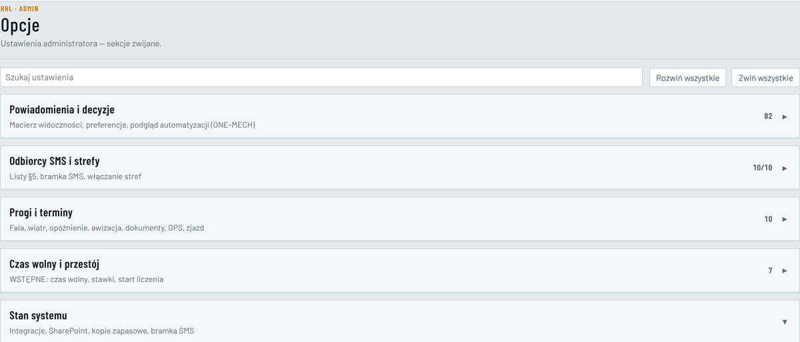

| 4 × błąd 403 przy wejściu | Konto Operacje HHL przy samym otwarciu Opcji dostaje odmowę: przełączniki bezpieczeństwa (B4), Historia zmian, Dziennik logowań, stan CSP. W konsoli są 4 błędy. |
| Przyciski bez prawa | Operacje widzi „Opublikuj” komunikat, progi, odbiorców SMS i „Włącz wymóg”. Baza je odrzuci, bo to funkcje tylko dla Administratora. |
| Prawa w bazie | Operacje może zapisać nową wersję cennika, parametry opłaty paliwowej, odczyt paliwa i wydać albo odwołać telefon bramki SMS (sprawdzenie „HHL”). Nie może: progi, komunikat, odbiorcy SMS, wymóg zezwoleń, macierz powiadomień, konta (sprawdzenie „Administrator HHL”). E33 i E40: cennik i adresy zmienia Administrator. |
| Przełączniki | 13 w bazie, w Opcjach da się zmienić 4. 12 z 13 ostatnio zmienione poleceniem w bazie (pole „kto” puste). Tylko „Wymóg zezwoleń” zmieniony w aplikacji (05.10, 19:38). |
| Historia zmian | 2 903 wpisy, z tego 2 713 (93%) to techniczne zmiany wierszy. Wszystkie 20 zmian roli (02.10–07.10) mają tę samą rolę w „było” i „jest”. |
| Stan systemu (B5) | Naprawione: po rozwinięciu dane są bez „Odśwież” (02:51 i 03:25). |
| Przełącznik | Stan | Co robi | Ostatnia zmiana |
|---|---|---|---|
| Wiadomości na zewnątrz | SMS do kierowców i e-maile poza log-mar.pl. Wyłączone do umów RODO. | 02.10, 18:43 · polecenie w bazie | |
| 2FA wymagane dla Administratorów HHL | Bez drugiego składnika Administrator nie wejdzie (E37, pytanie 1). | 27.09, 21:25 · polecenie w bazie | |
| Bez zezwolenia nie ma „Gotowy” | Transport innej klasy niż STANDARD nie przejdzie do „Gotowy” bez zezwolenia PL i SE. | 05.10, 19:38 · Administrator HHL | |
| SMS przy zbliżaniu do strefy | SMS do osób ze Śremu i Boden przed przyjazdem (E42). | 01.10, 23:01 · polecenie w bazie | |
| SMS przy wjeździe na teren | SMS przy wjeździe na załadunek i rozładunek (E42). | 01.10, 23:01 · polecenie w bazie | |
| E-mail o decyzjach automatycznych | E-mail o decyzjach od razu, niepilne w skrócie dnia. | 04.10, 17:36 · polecenie w bazie | |
| Odczyt pozycji z emtrack | Pozycje naczep co 2 min (E23, E27). | 05.10, 13:18 · polecenie w bazie | |
| Stary link kierowcy | Wejście kierowcy z linku. Aplikacji kierowcy nie zmieniamy. | 03.10, 23:52 · polecenie w bazie | |
| Codzienne ceny paliwa | Odczyt OKQ8 i Orlen raz dziennie do opłaty paliwowej (E39). | 05.10, 11:07 · polecenie w bazie | |
| Tygodniowy biuletyn paliw UE | Cotygodniowy biuletyn UE (olej napędowy PL i SE). | 28.09, 09:58 · polecenie w bazie | |
| Kontrola trasy HERE | Sprawdzenie trasy dla wymiarów zestawu. Czeka na wymiary. | 04.10, 22:05 · polecenie w bazie | |
| Przeszkody wzdłuż korytarza | Przeszkody dla zestawu wzdłuż korytarza (HERE). Czeka na wymiary. | 04.10, 23:16 · polecenie w bazie | |
| Warstwa przeszkód na mapie | Przeszkody jako warstwa Mapy. Czeka na wymiary. | 05.10, 03:58 · polecenie w bazie |
| Co | Transporty · Historia zmian · Sprawy · Faktury i finanse (tylko HHL) |
| Zakres | od – do (data załadunku albo data zdarzenia) |
| Kolumny | nazwy po polsku, nazwa transportu (E41), osoby i firmy zamiast identyfikatorów, formaty z E21 |
| Kto widzi co | kolumny według roli, jak dziś (KSH bez kosztów, SCX bez przychodów) |
| Plik | „WatchTower_Transporty_01.10–08.10.xlsx” · bez limitu 2 000 wierszy |
| Fala | 3,8 m — wyżej sprawa „możliwe odwołanie rejsu” |
| Porywy wiatru | 40 węzłów — jak wyżej |
| Opóźnienie | 30 min — ETA po końcu okna o więcej niż 30 min |
| Potwierdzenie daty | 5 dni przed załadunkiem KSH potwierdza datę |
| Awizacja | 48 h ostrzeżenie, 12 h pilne (E32) |
| Dokumenty | 24 h ostrzeżenie, 6 h pilne (E31) |
| Brak pozycji | 15 min w ruchu (E15) |
| Zjazd z trasy | 2 km |
| Źródła danych | progi z E23 |
| Ekran | Dziś (zakładka) | Treść według | Administrator | Operacje |
|---|---|---|---|---|
| Powiadomienia › SMS przy strefach | Odbiorcy SMS i strefy | E42 (SMS A–D), bramka → Stan systemu (E23) | zmienia | widzi |
| Zasady › Progi alarmów | Progi i terminy | E12, E15, E23, E31, E32 | zmienia | widzi |
| Pieniądze › Dopłaty | Czas wolny i przestój | E33 (bez „WSTĘPNE”, wybory przyciskami) | zmienia | widzi |
| Pieniądze › Terminy płatności i adresy | — | E40 (adresy księgowości, terminy) | zmienia | widzi |
| System › Stan systemu | Stan systemu | E23 (Źródła danych), E19 (Bezpieczeństwo) | widzi | widzi |
| Ludzie › Użytkownicy | Użytkownicy i sesje | E6, E37 (lista ze stanem, zaproszenie) | zmienia | — |
| Ludzie › Logowania | Dziennik logowań | E37 | widzi | — |
| Powiadomienia › Komunikat dla wszystkich | Komunikat dla wszystkich | E37 | zmienia | widzi |
| System › Historia zmian | Historia zmian | E12, E17 (było → jest), E37 („jako”) | widzi | — |
| System › Eksport danych | Eksport danych | E12, E21, E41 | pobiera | pobiera |
| Pieniądze › Cennik | Cennik | E33 (wersje, procenty anulowania) | zmienia | widzi |
| Zasady › Zezwolenia i dokumenty | Wymóg zezwoleń | E31 (wymagane dokumenty, terminy) | zmienia | widzi |
| Dla mnie | Preferencje i pozostałe; u KSH i SCX „Ustawienia” | E11, E16 (waluta), E37 (2FA, urządzenia) | zmienia swoje | zmienia swoje |
| System › Przełączniki bezpieczeństwa | — | E12 (13 przełączników), E19, E37 | zmienia | widzi |